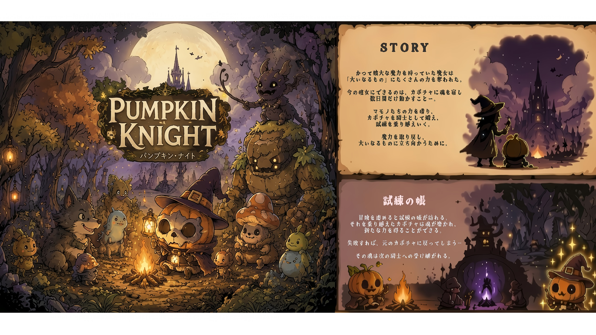
GAME INTRODUCTION
『PUMPKIN KNIGHT』は、魔女とカボチャの騎士が織りなす、ハロウィンをモチーフにしたオートバトル×ローグライトの育成ゲームです。
魔力を奪われた魔女は、残された力でカボチャに魂を宿しました。小さなカボチャの騎士は、魔女の魔力を取り戻すため、マモノたちの力を借りながら試練へと挑みます。
戦闘を通じて新たなスキルを獲得し、料理・錬成で能力を強化。特性やスキルを組み合わせることで、プレイごとに異なる成長や戦い方を楽しめます。
限られた時間の中で騎士を育て、挑戦で得た力を次の冒険へとつなぎながら、自分だけのビルドを作り上げていくのが本作の魅力です。
育成やビルド構築が好きな方、短時間で繰り返し遊べるローグライトが好きな方におすすめです。
GAME SYSTEM
BATTLE & GROWTH
オートバトルで魔物と戦い、経験を積んで成長。戦闘中に閃くスキルを組み合わせ、個性的な能力を持つ騎士を育てます。
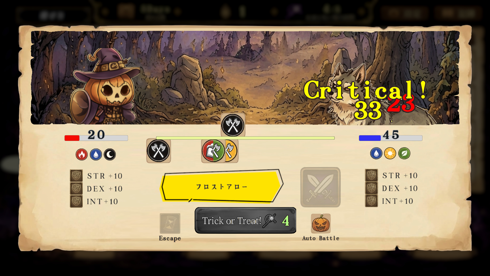
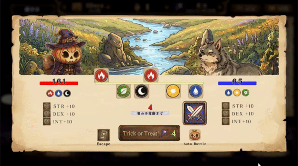
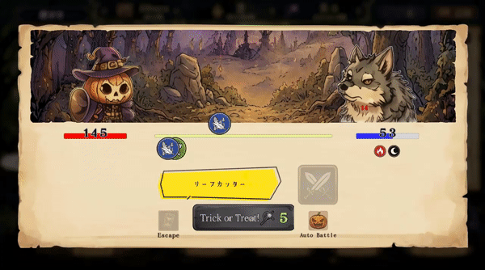
「おまじない」を使ってタイムラインに介入し、敵味方のスキル発動順を組み替えることができます。

CRAFTING
森で集めた素材を使ってアイテムを作成。さまざまな効果を組み合わせ、冒険を有利に進めます。
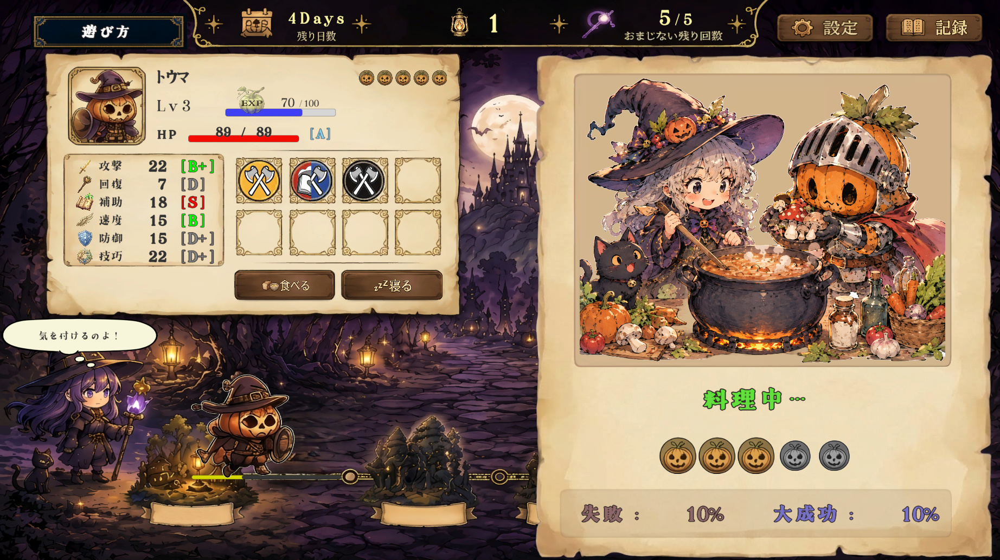
ROGUELITE
限られた時間の中で成長と強化を繰り返し、試練と、その先に待つ強大な存在を目指します。
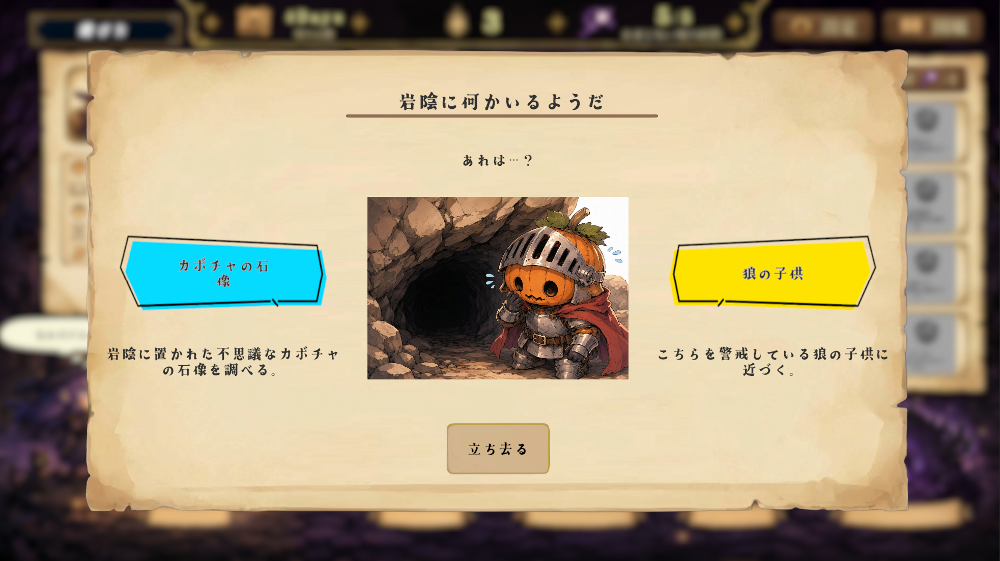
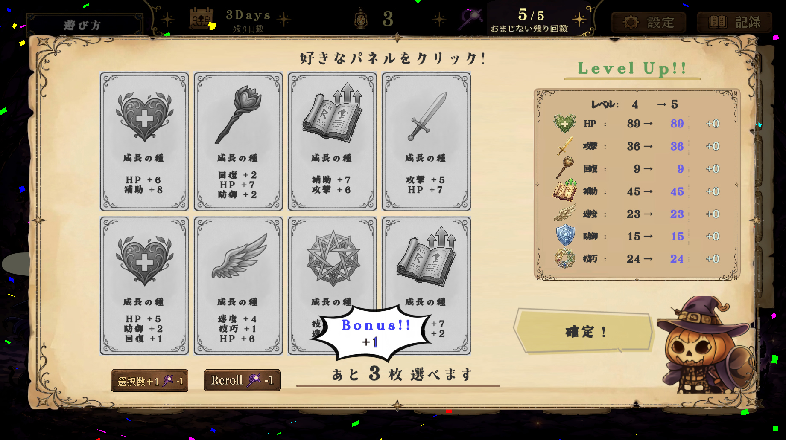
SCREENSHOTS
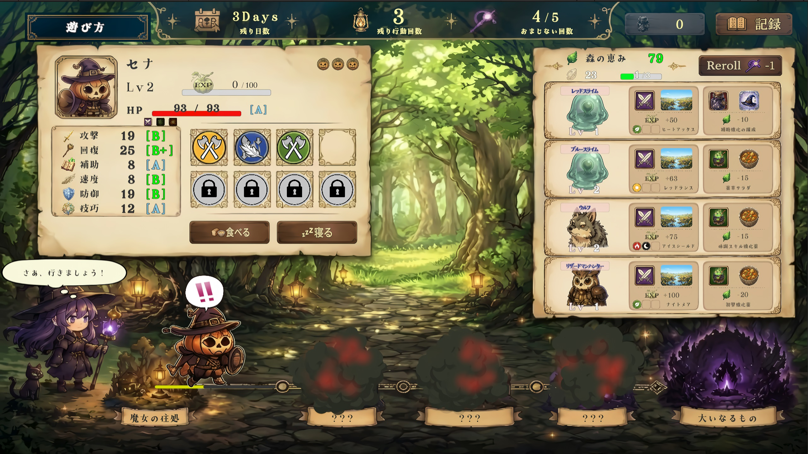
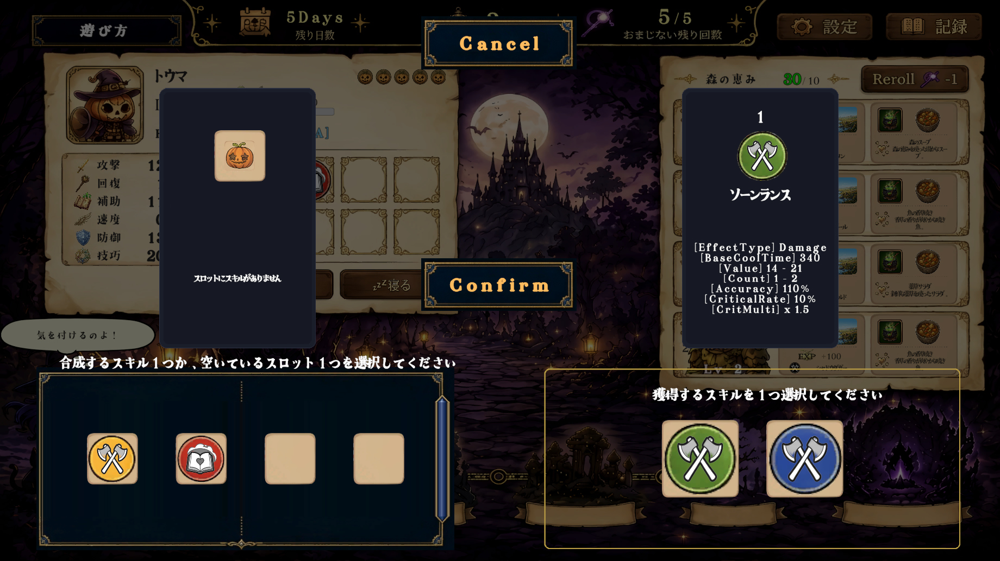
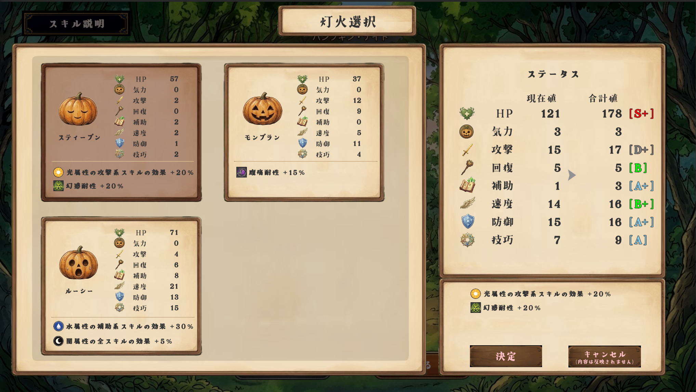
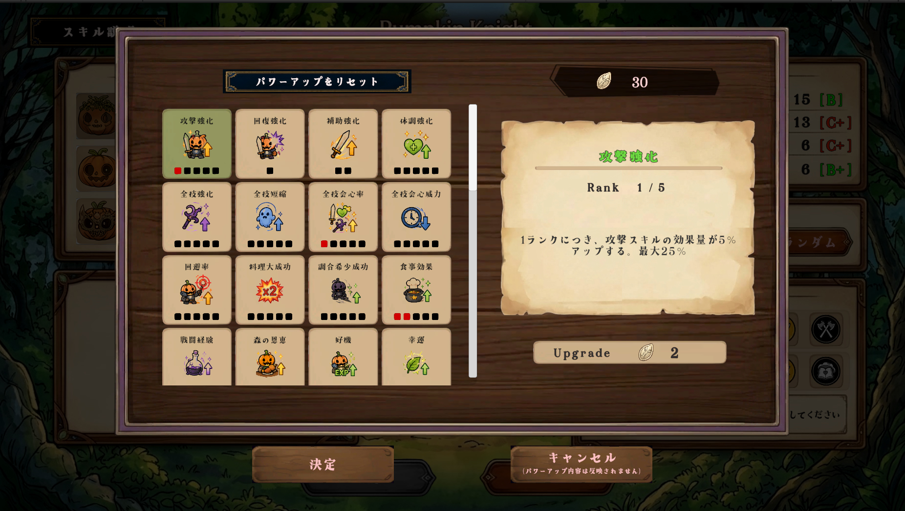